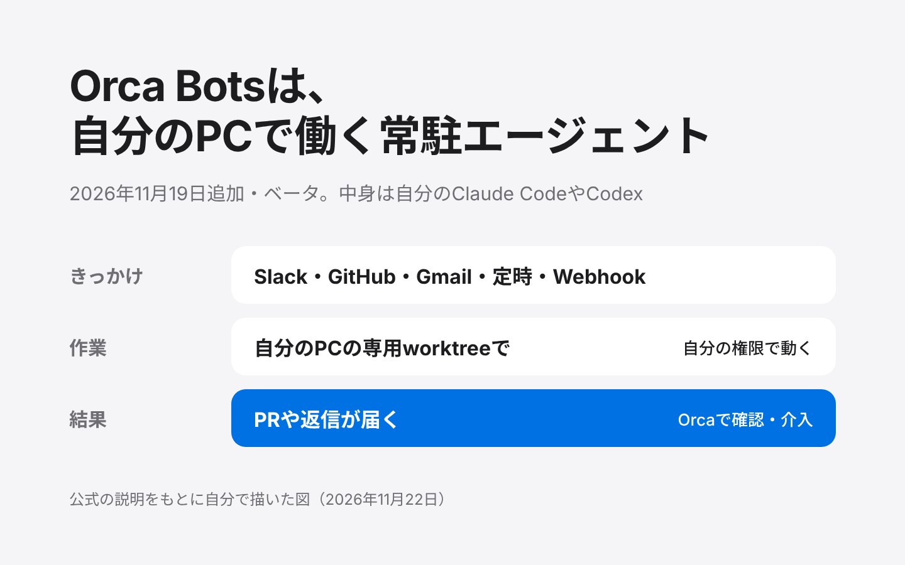
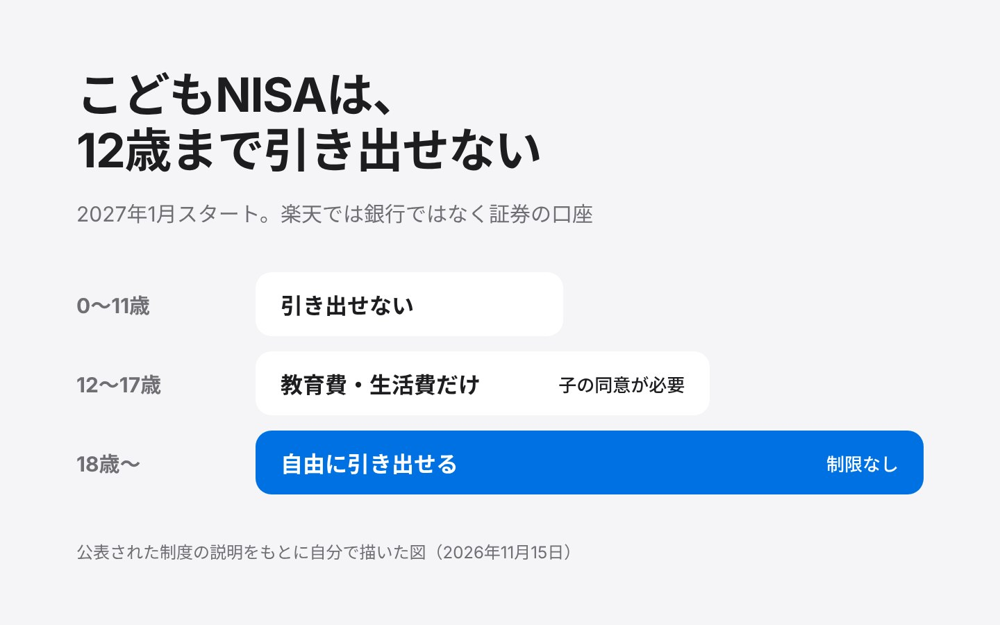
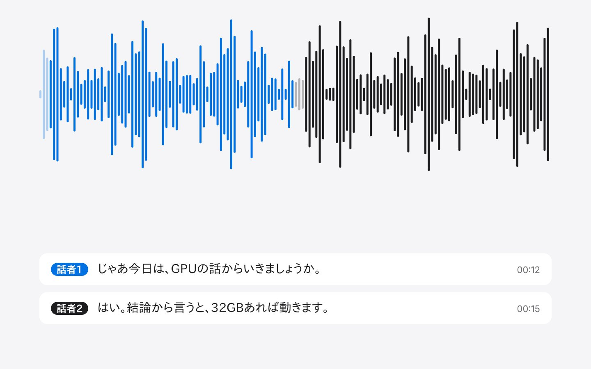
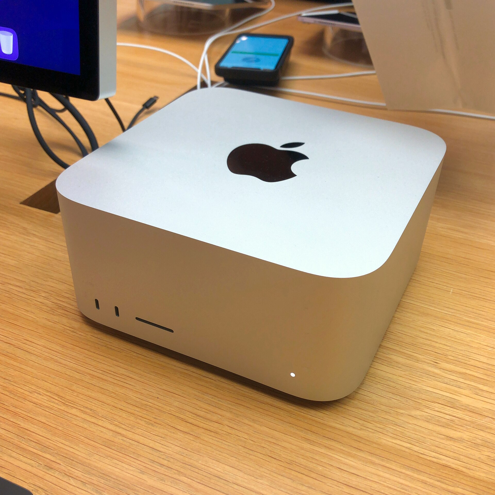
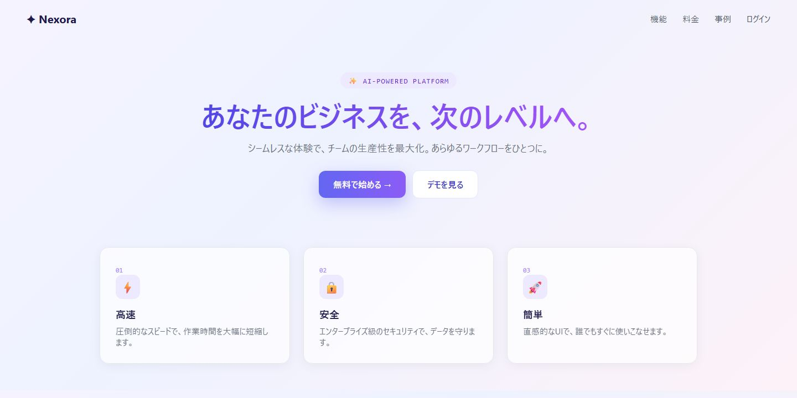
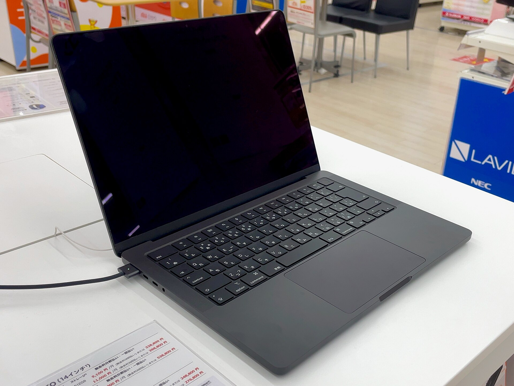
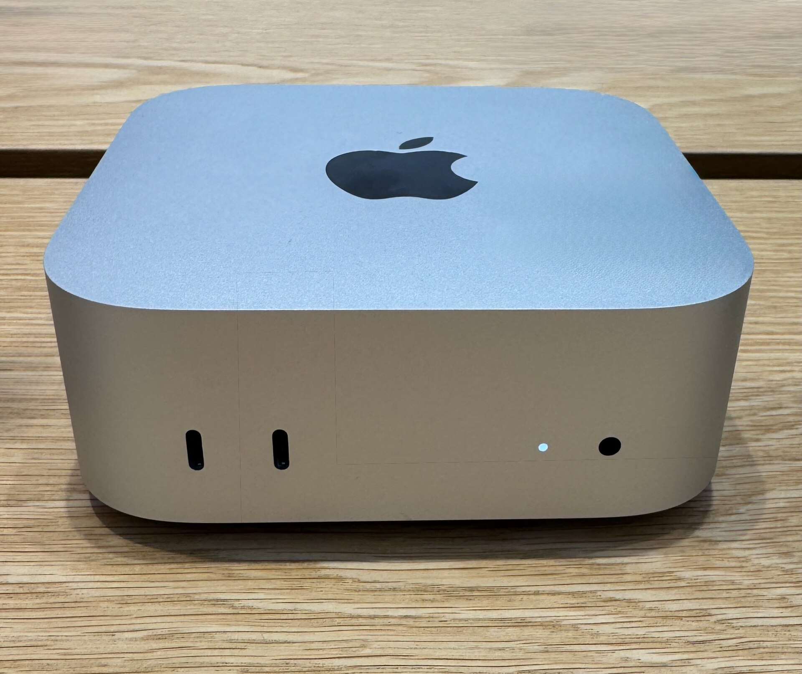

36歳・一児の親・エンジニア歴15年目。手を付ける前のメモ。
気になったら、
調べておく。
-

Orcaのボット機能は何に使えるか
ボット機能の追加は本当（11月19日、ベータ）。自分のPCで自分のClaude CodeやCodexが動く。公式の使い道と、考えなそうな使い道を6つ。
-

楽天のこどもNISAはいつから、いつ引き出せるか
開始は2027年1月で、扱うのは楽天証券。引き出しは小6の1月から、教育費か生活費に限り子の同意つきで。楽天銀行の普通預金は別物。
-

DevinのSWE-2は本当に永久無料か
Xで見た投稿の裏付けを取った。おおむね本当だが、DesktopとCLIで、Pro・Max・Teamsの加入者が対象。SWE-2はCognitionの自社コーディングモデル。
-

Nemotron 3.5 Transcribeは家で動くか
NVIDIAのオープンな文字起こしモデル。話者分けと翻訳も1つでやる。家ならRTX 5090（32GB）でNVFP4版が最低ラインで本命。
-

Mac StudioかMacBook Proか
ローカルLLM、iOSのビルド、Blender。同じ約120万円で、M5 UltraのStudioとM5 MaxのProを比べた。GPUと帯域は約2倍違う。
-

taste-skillは誰が作ったか
このサイトのデザインに使ったAI用スキル。作者はミュンヘンの個人開発者で、目的はAIに平均的なページを作らせないこと。
-

iOS開発に買うならどのMac
Mac mini（M6）とMacBook Air（M5）・Pro（M6）を、iOSアプリ開発の場面ごとに比べた。決め手は場所とモニター。
-

Mac mini（M6）は買いか
M4のときより5万5千円上がった新型。どの構成なら後悔しないか、価格表と見積もりで整理した。
見つからなかった。言葉かタグを変えてみて。
BROWSE → PICK → READ ← → でめくる